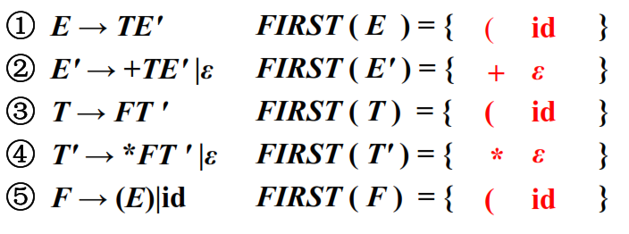
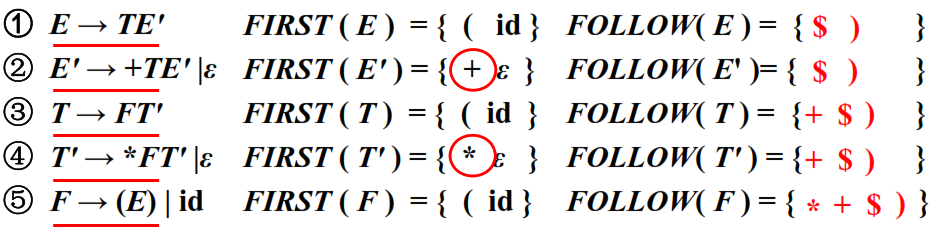
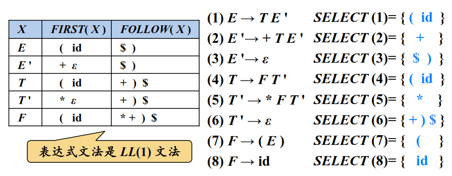
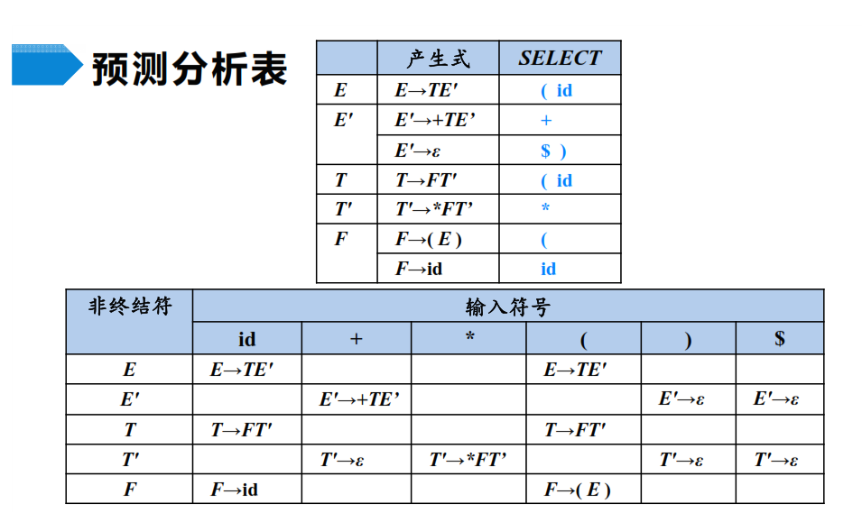

编译原理 - 语法分析
1 代表性文法
E -> E + T | T T -> T * F | F F -> ( E ) | id
该文法的无左递归版本：
E -> TE' E' -> + TE' | ε T -> FT' T' -> * FT' | ε F -> ( E ) | id
2 自顶向下语法分析
- 对于非终结符号 A, FIRST(A) 被定义为可从 A 推导得到的串首终结符号的集合，如果 A 可以推导得到 ε, 那么 ε 也在 FIRST(A) 中。
对于非终结符号 A, FOLLOW(A) 被定义为可能在某些句型中紧跟在 A 右边的终结符号的集合。如果 A 是某些句型的最右符号，那么 $ 也在 FOLLOW(A) 中。
NOTE: ε 不会出现在 FOLLOW 集中
产生式 A→β 的可选集是指可以选用该产生式进行推导时对应的输入符号的集合，记为 SELECT(A→β)
- SELECT(A→aβ) = { a }
- SELECT(A→ε) = FOLLOW(A)
产生式 A→α 的可选集 SELECT:
- 如果 ε 不属于 FIRST(α), 那么 SELECT(A→α) = FIRST(α)
- 如果 ε 属于 FIRST(α), 那么 SELECT(A→α) = (FIRST(α)-{ε})∪FOLLOW(A)
代表性文法的 FIRST 集：

代表性文法的 FOLLOW 集：

代表性文法的 SELECT 集：

通过 SELECT 集构造 预测分析表, 输入符号和 SELECT 集相对应，单元格和产生式相对应：

预测分析法的实现步骤：
- 构造文法
- 改造文法：消除二义性、消除左递归、消除回溯
- 求每个变量的 FIRST 集和 FOLLOW 集，从而求得每个候选式的 SELECT 集
- 检查是不是 LL(1) 文法。若是，构造预测分析表
- 对于递归的预测分析，根据预测分析表为每一个非终结符编写一个过程；对于非递归的预测分析，实现表驱动的预测分析算法
3 非递归的预测分析
非递归的预测分析显示的维护一个栈，栈顶保存一个非终结符或终结符：
- 当栈顶为非终结符 X 时，根据输入符号 a 和预测分析表选择一个 X 的产生式
- 当栈顶为终结符 X 时，判断 X 和 a 是否匹配
非递归预测分析中的错误处理
同步词法单元的构造：
- 非终结符号 A 的 FOLLOW 集
- 如果非终结符可以推导出空串，就把可以推导出空串的产生式当做默认值使用
错误处理：
- 如果 M[A, a] 为空，则输入符号 a 被忽略
- 如果该条目为同步词法单元，弹出栈顶非终结符
- 如果栈顶的 词法单元 和输入符号不匹配，那么弹出栈顶词法单元
4 自底向上的语法分析
自底向上语法分析是一个 最右推导 的逆过程，常用技术为 移入-规约 语法分析技术。
移入-规约语法分析器可能采取的动作：
- 移入 - 将下一个输入符号移到栈的顶端
- 规约 - 被规约的符号串的 右端 必然是 栈顶, 语法分析器在栈中确定这个串的 左端, 并决定使用哪个非终结符来 替换 这个串
- 接受 - 宣布语法分析过程成功完成
- 报错 - 发现一个语法错误，并调用一个错误恢复子例程
4.1 项和 LR(0) 自动机
对于产生式 A -> XYZ 来说，存在四个项：
A -> ·XYZ A -> X·YZ A -> XY·Z A -> XYZ·
对于移入-规约操作来说： A -> XYZ· 进行规约操作，其他进行移入操作。
增广文法
如果文法 G 是一个以 S 为开始符号的文法，那么 G 的增广文法 G' 就是在 G 中假如新的开始符号 S' 和产生式 S' -> S 得到的文法。
项集的闭包
如果 I 是文法 G 的一个项集，那么 CLOSURE(I) 可以根据以下两个规则得出：
- 一开始，将 I 中的各个项加入到 CLOSURE(I) 中
- 如果 CLOSURE(I) 中存在点在 · 非终结符后，并且该非终结符的第一个项不在 CLOSURE(I) 中，那么将该项添加到 CLOSURE(I) 中。
比如：
项集 I: E' -> ·E CLOSURE(I): E' -> ·E E -> ·E + T E -> ·T T -> ·T * F T -> ·F F -> ·(E) F -> ·id
GOTO 函数
GOTO(I, X)，其中 I 是一个项集而 X 是一个文法符号。GOTO(I, X) 被定义为 I 中所有形如 [A -> a·XB] 的项所对应的的项 [A -> aX·B] 的集合的闭包。